Extension points are the standard way of extending plugins in Eclipse. There are three extension points defined in Quantum.
com.quantum.Quantum.metadata
com.quantum.Quantum.data
com.quantum.Quantum.embedded
The first one extends the Bookmark View context menu, allowing other plug-ins to get info on the metadata of the selected tables and/or views, and use it.
The second one extends the Table View context menu, allowing other plug-ins to get info on the data of the selected rows, and use it.
The third one allows other plugins to define a database connection, so that
Quantum can make a connection to that database. The database can be also provided
in the same plugin, or not. The standard Quantum distribution com.quantum.derby
plugin extends the com.quantum.Quantum.embedded extension point, allowing
Quantum to automatically generate a connection (bookmark) to a Derby database
that the plugin also defines.
In the two first cases, data is passed as an XML document, with an internal
definition. This definition could change in the future, so if anybody is developing
something using these extension points, let us know so we change with care.
In any case, the two first extension points are redundant, and kept only for
compatibility purposes, as the same results can be obtained by using standard
extension points of the Eclipse menus, and directly calling Quantum methods
for getting the info.
There is an example extender plugin to illustrate the use of these extension
points. What the extender plugin does is simply getting the info as an XML document,
convert it to text and copy it to the clipboard, but of course other plugins
would do more interesting things. This extender plugin can be found on the doc
directory of the Quantum plugin, with the name extender.zip. To test it, simply
unpack in the Eclipse plugin directory, just like Quantum. A new menu item will
appear both in the Bookmark View and the Table View. Using the menu item will
copy the data passed to the extender function to the clipboard. The source code
of that plugin should be used as an example to develop other extensions to Quantum.
If you want to extend Quantum from another plugin and have doubts, please contact
me with your questions.
We'll create a new plugin that extends Quantum. This tutorial assumes Eclipse version 3 or higher. Also, you should already have loaded into your workspace the Quantum project source code. So something like that should already be on your Package Explorer view of Eclipse.
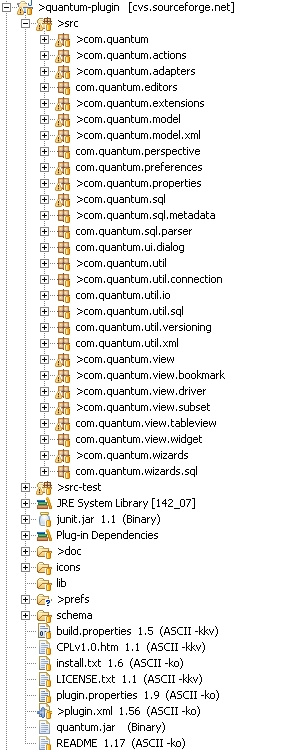
First we create a new plugin project using the new project wizard. Choose the name you want, I used com.quantum.extender
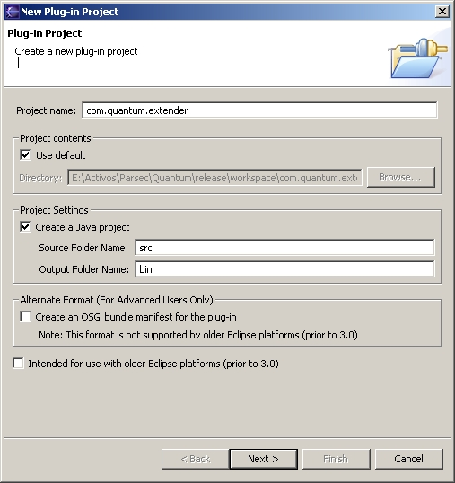
Leave the second page as it is:
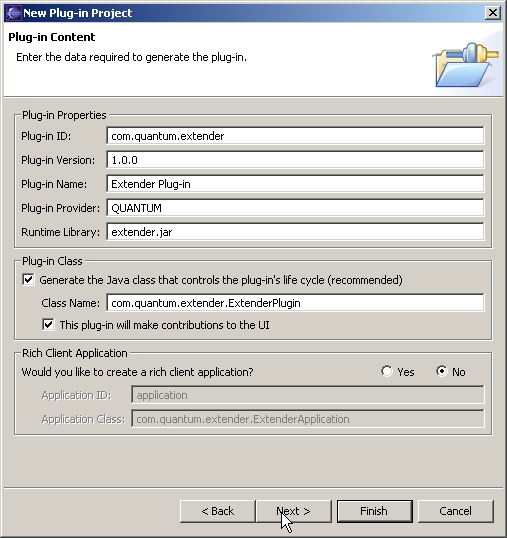
And directly hit Finish.
Eclipse will create a new plugin with no functionality, and automatically open the plugin.xml file in the editor (or MANIFEST.MF, depending on your version).
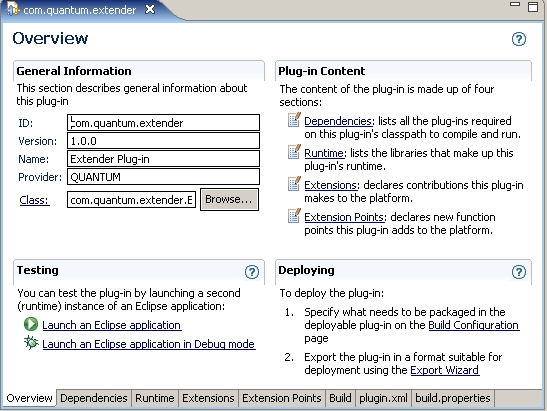
You can customize here the name of the plugin, etc. Then move to the Dependencies tab.
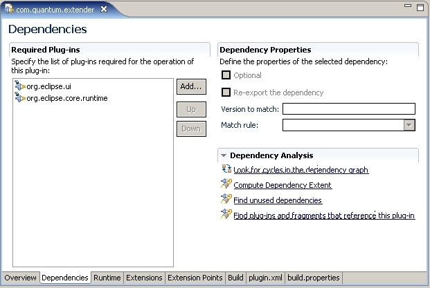
Your extender plugin must depend on the quantum plugin, both at run-time and at compile-time. We add the run-time dependency in this tab of the plugin.xml file. We click on the Add... button.
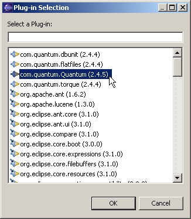
And select the com.quantum.Quantum plugin from the list of possible plugins. If the quantum plugin does not appear in the list, it's possibly that you have not the quantum plugin in your workspace. Download the sources from CVS.
Afterwards, the quantum plugin appears in our list of dependencies.
We navigate to the Extension tab. Here we define our extensions. If you aren't used to Eclipse terminology, basically an extension point is where you offer a point to be extended by other plugins (in this case is Quantum the one that has the extension points), and a extension is the code we write to take advantage of that extension point, and so, effectively, extend it. In this case it's our com.quantum.extender plugin the one that will extend the Quantum plugin extension points. For the moment, as it's a new plugin, it has no extensions defined.
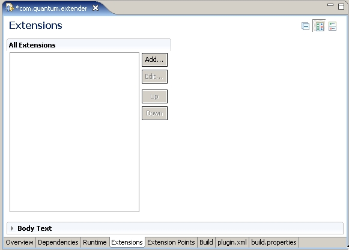
The whole point of this plugin is to extend the quantum plug-in with new functionality, so we next define the extensions. We use the Add... button to select the extension points that we are going to use.
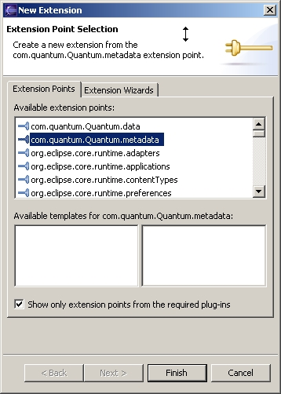
We select the com.quantum.Quantum.metadata extension point so as to have access to the metadata (structure) of the tables and views of databases.
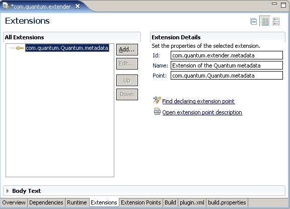
We give an id to our extension as com.quantum.extender.metadata, that is, the id of our plugin, plus a more or less significative name. In the name we put a short description of the exension point. The extension point we had already selected in le left panel, and is automatically filled in the right one.
So we have decided to extend this extension point of Quantum. Quantum has defined a schema for that extension point. To see this schema, we open the Quantum plugin.xml file (not the Extender plugin.xml that we have worked up to now).
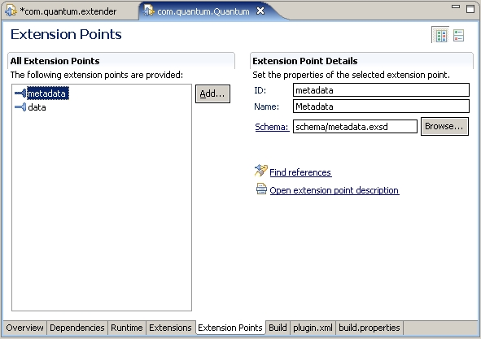
We notice the schema is saved in a subdirectory called schema, and is called metadata.exsd. We click on the underlined Schema: label of the right panel "Extension Point Details", and the schema editor is opened for us, displaying a short description of the schema.
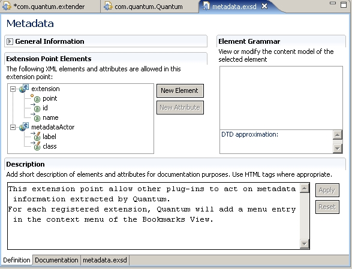
Selecting the extension root of the tree, we see the structure that this extension point needs if we want to "connect" to it.
. In this schema, Quantum explains what it needs from anybody extending the metadata extension point. Basically Quantum needs a string to use it as a label in its menu. 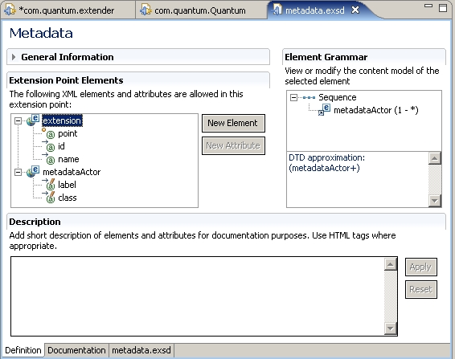
Now we try to understand the schema. The left Extension Point Element says that anybody extending this metadata extension point needs to give a "point", and "id" and a "name". Those are the attributes of extension in our schemna. That's more or less standard for all extension points. The little orange ball near the icon of the point attribute says that it's required, the other two not really. We have already provided in our extension that three items. We have just filled them up, if you remember, in our plugin.xml file for the com.quantum.extender plugin.
But that's of course not enough information for Quantum to make an extension. At the very least we need a string to display in the Quantum menu, so that the user can use the extension. So there is anoter element, metadataActor.
The right Grammar pannel says that the extension, aside from having those properties, has a sequence of metadataActor elements. That is because we can define several menu items with several different functionalities. And each metadataActor has two attributes, the label, and the class. They are not defined as required, but nothing much is going to happen if you don't define them, so you better give them. The little pencil on the icon tells you that the attribute has an annotation that you can read and help you understand what's that attribute for. If you click on label:
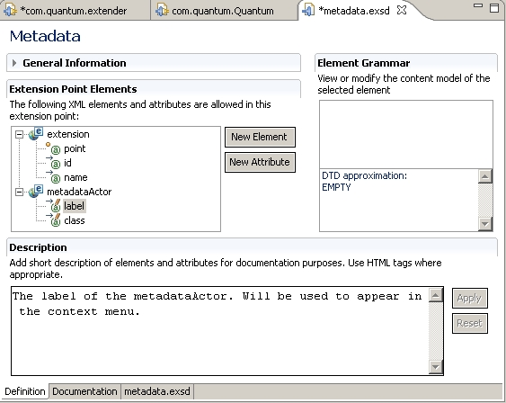
A short description appears in the box labeled Description. This tells us that the label attribute is the string that we want to appear in the Quantum menu. If we click on class, it tells us that the class attribute is the name of the class that Quantum is going to call when the user selects the menu item. Of course that class is to be provided by us, when writing the extender plugin.
So we go back to our plugin.xml file editor, and create a new metadataActor element in our extension. We select our just-defined extension and right-click on it, and select on the menu that we want to create a new metadataActor.
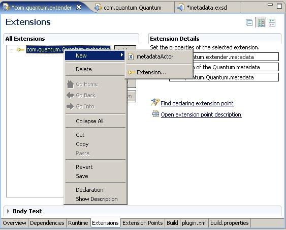
A new metadataActor item appears on the left panel, and two empty boxes on the right panel, with the names of the attributes that Quantum defined for the metadataActor. We fill the label with the string that we want to appear on the Quantum menu. It has to be something significative to the user of the application. We decide to make our extension point generate a C++ class with the info from the database metadata. So we give an adequate label, and then an appropiate class name. The class does not exist yet. The editor offers us no helper to select an already-defined class simply because it has no idea that the value of the class attribute is to be a java class. Only the Quantum plugin, that defined the metadataActor element will know that. To the editor, they are all just attributes with strings in them, because that's the way they are defined. I think that you can define an attribute to be a java element, but you'll have to check that for yourself. After filling up the label and the class, the editor looks like that.
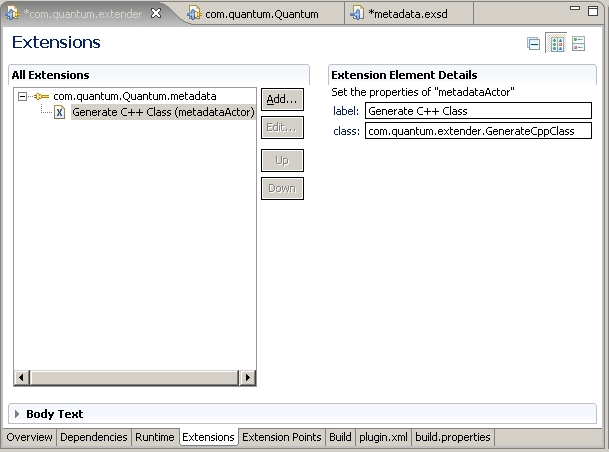
We save the changes to the plugin.xml file, and proceed to the next step.
We have promised the extension point a class called com.quantum.extender.GenerateCppClass. It would be nice from us to provide one such class, because up to the moment it's just a figment of our imagination.
So go to the com.quantum.extender package in the Package Explorer of Eclipse. This package will only have the ExtenderPlugin class, generated by the New Project wizard. Now we add another class using the add new class wizard.
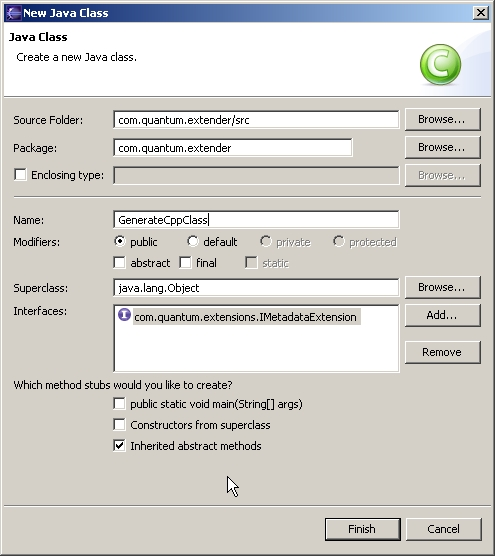
Notice that we have added the interface com.quantum.extensions.IMetadataExtension. Quantum needs that interface to be sure that the function it's going to call exists. In this case the interface defines a single function run(Document doc). This Document is a org.w3c.dom.Document object that Quantum will pass to the run() function when calling it. That document will have XML with the metadata of the selected element in the GUI of Quantum.
The new class wizard generates an stub for function run() that does nothing, but that's enough for us. We can now test that the extension point works. We set a breakpoint in the run() function and execute Quantum in debug mode to see if our new menu item really appears in Quantum.
Now, when we execute Quantum in a debug environment as an Eclipse Application, and open a bookmark, and right-click on a table to get the context menu, we get a new menu item, that did not appear previously.
Before defining the extension: 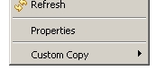 After: 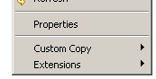
The Extensions menu item is a generic Quantum item to group all extensions, in this case extensions of type metadata. If you open the Extensions menu item, your defined extension menu item will appear.
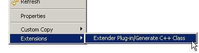
The used string is not exactly what you wrote, but adds at the beginning the name of the extender plugin, to have a bit of organization if several plugins extend that point. At some time in the future, even a second level of sub-menus based on the plugin name could be implemented.
Well, then you select your just-generated menu item, and the run() function gets called. You know that because you put a breakpoint there, and it has just been hit. In your run() function, you receive a single parameter with the XML description of the selected items. You can make a first test of that by simply copying the received XML to the clipboard. To that end we write
public void run(Document doc) {
QuantumPlugin.getDefault().getSysClip().setContents(
new Object[] { com.quantum.ExternalInterface.xmlToString(doc) },
new Transfer[] { TextTransfer.getInstance()});
}
The xmlToString() is a function that gets an org.w3c.dom.Node and converts it to a String. It's part from the com.quantum.ExternalInterface class. This class is where Quantum groups some functions (from 2.4.5 version onwards) for use of extender plug-ins. More on that later. Anyway, we test and get this xml code into the clipboard.
<?xml version="1.0" ?>
<Metadata>
<Author>Quantum</Author>
<Version>0.4</Version>
<table database="Oracle" isSynonym="false" name="BONUS" schema="SCOTT">
<column java.sql.Types="12" name="ENAME" nullable="true" position="1" primaryKey="false" size="10" type="VARCHAR2" />
<column java.sql.Types="12" name="JOB" nullable="true" position="2" primaryKey="false" size="9" type="VARCHAR2" />
<column java.sql.Types="3" name="SAL" nullable="true" position="3" primaryKey="false" size="22" type="NUMBER" />
<column java.sql.Types="3" name="COMM" nullable="true" position="4" primaryKey="false" size="22" type="NUMBER" />
</table>
</Metadata>
Now we want to do something about it. We can of course use the supplied XML node directly to interrogate it about the different tags. The structure of the XML and the name of the tags and attributes are likely to remain constant over time, although new items will surely be added. As a better alternative is to use the Quantum ExternalInterface class to extract metadata information from this XML.
The com.quantum.ExternalInterface class is a class designed to be used by external
plugin developers. The methods in this class are to be rather stable, and also
easy to understand and use. The functions in this class try to use as far as
possible regular java classes instead of more mutable Quantum classes. For example,
the function getBookmarkNames()returns as string array with the
names of the bookmarks defined in Quantum. The functions are commented and usually
it's purpose is rather straightforward. The best way of knowing that class is
by reading the source. When developing a Quantum extension, is better to go
there first to see if your required functionality already exists, before delving
deeper into Quantum code to get it. And if your funcionality is not there and
it's general-purpose, please ask for a new function to be added to the interface
to the Quantum developers (or better still, supply your own patch :)
However, not always is practical to use only java classes. There are some functions of ExternalInterface that return internal Quantum types. We'll see one of them later.
Now we want to iterate the XML and see how many tables and views has, because our code is only interested in tables and views. We could use the NodeIterator and NodeFilter from the org.w3c.dom specification, but Quantum defines an iterator of its own. It's still only partially developed, the use now would be:
public void run(Document doc) {
Iterator iter = new XMLMetadataIterator(doc, 0);
int i = 1;
while (iter.hasNext()) {
Node node = (Node) iter.next();
MessageDialog.openInformation(
ExtenderPlugin.getDefault().getWorkbench().getActiveWorkbenchWindow().getShell(),
"Element " + String.valueOf(i),com.quantum.ExternalInterface.xmlToString(node));
i++;
}
}
The code I guess is clear enough. The XMLMetadataIterator receives a Document to iterate over, and an ugly flag, that up to now can be only 0 or -1. -1 if all nodes are to be iterated, 0 if only tables and views. In the future, more options will probably be added. We select only tables and views, and make a simple iteration to display the resulting nodes. Note that XMLMetadataIterator is not part of the "stable" external interface of Quantum and so subject to more change. You can navigate the document using the normal DOM specifications.
Following with our program, we want to do something more interesting than just displaying the items, so we extract the metadata from them. To do this, Quantum has a class called XMLToModelConverter. This class allows you to get metadata in a simple way from the XML. The use would be something like:
public void run(Document doc) {
Iterator iter = new XMLMetadataIterator(doc, 0);
int i = 1;
while (iter.hasNext()) {
Node node = (Node) iter.next();
TableMetadata metadata = new XMLToModelConverter((Element)node);
MessageDialog.openInformation(
ExtenderPlugin.getDefault().getWorkbench().getActiveWorkbenchWindow().getShell(),
"Element " + String.valueOf(i),
"Name : " + metadata.getName() + "\n" );
i++;
}
}
From the TableMetadata object that we have got, we can get the columns and the metadata from them, using again, of course, another Quantum interface, the Column, that holds the metadata of a single column. The code to get the columns and its metadata could be like:
Column[] columns = null;
try {
columns = metadata.getColumns();
} catch (NotConnectedException e) {
} catch (SQLException e) {
}
if (columns != null) {
for (int j = 0; j < columns.length; j++) {
Column column = columns[j];
String name = column.getName();
int type = column.getType(); } }
Now you have all the elements needed to make a Quantum extension plugin, or at least I hope you do.
Extending the other extension point should be straightforward from here. Just remember that your class should now extend the IDataExtension interface, to allow quantum to differentiate it.The only other difference is the location of the menu and the XML format. In this case, the data extension point, the menu extended is the context menu of the Table View. Normally it appears as :
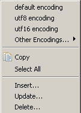
If an extension is defined it appears as:
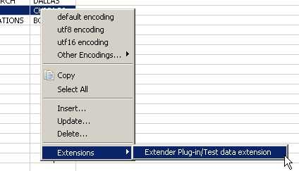
The selected rows are copied to the clipboard using the following XML. The <table> tag is similar to what we have seen before, and only the two data rows are added, using the <DataRow> tag, that contains the actual data in tags named with the respective column names.
<?xml version="1.0" ?>
<Metadata>
<Author>Quantum</Author>
<Version>1.1</Version>
<table bookmark="ScottDB" database="Oracle" isSynonym="false" name="DEPT" schema="SCOTT">
<column java.sql.Types="3" name="DEPTNO" nullable="false" position="1" primaryKey="true" size="2" type="NUMBER" />
<column java.sql.Types="12" name="DNAME" nullable="true" position="2" primaryKey="false" size="14" type="VARCHAR2" />
<column java.sql.Types="12" name="LOC" nullable="true" position="3" primaryKey="false" size="13" type="VARCHAR2" />
</table>
<DataRow>
<DEPTNO>20</DEPTNO>
<DNAME>RESEARCH</DNAME>
<LOC>DALLAS</LOC>
</DataRow>
<DataRow>
<DEPTNO>40</DEPTNO>
<DNAME>OPERATIONS</DNAME>
<LOC>BOSTON</LOC>
</DataRow>
</Metadata>
There are no functions to help the user extract this data from the XML, but
could be created if popular demand grants it;o)